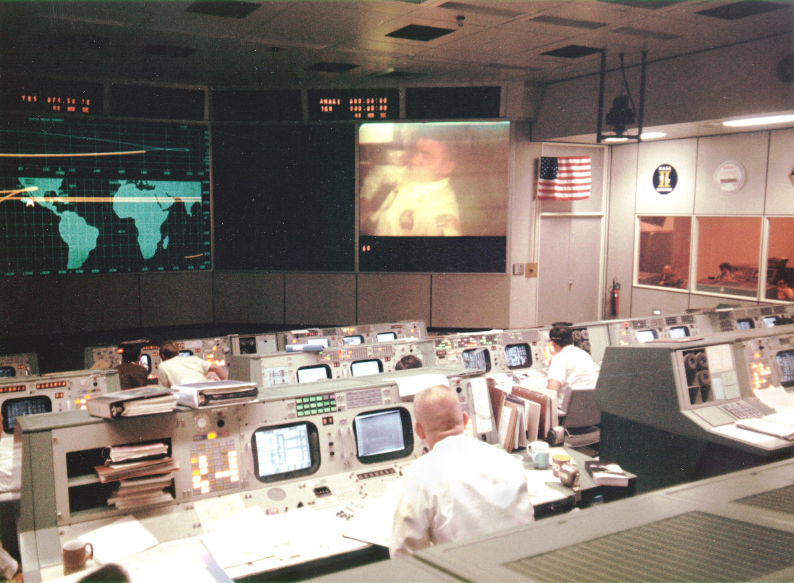

13 April 1970
Overall view of the Mission Operations Control Room in the Mission Control Center at the Manned Spacecraft Center, during the fourth television transmission from the Apollo 13 spacecraft while enroute to the Moon.
Eugene F. Kranz (foreground, back to camera), one of four Apollo 13 Flight Directors, views the large screen at front of MOCR. Astronaut Fred W. Haise Jr., lunar module pilot, is seen on the screen. The fourth television transmission from the Apollo 13 mission was on the evening of April 13, 1970.
Shortly after the transmission ended and during a routine proceedure that required the crew to flip a switch that stirred one of the cryogenic liquid oxygen tanks, an explosion occurred that ended any hope of a lunar landing and jeopordized the lives of the three crew members.